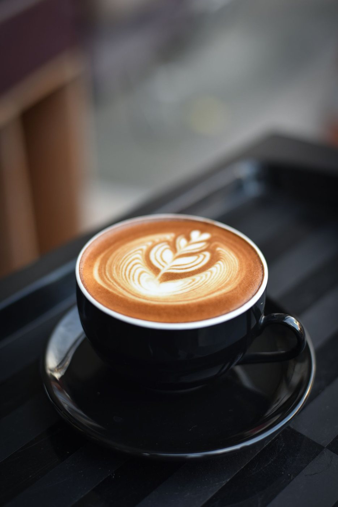
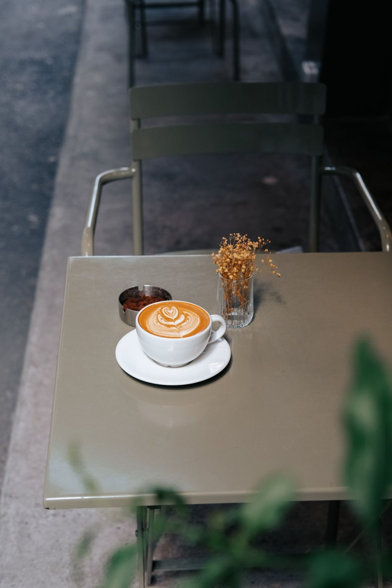
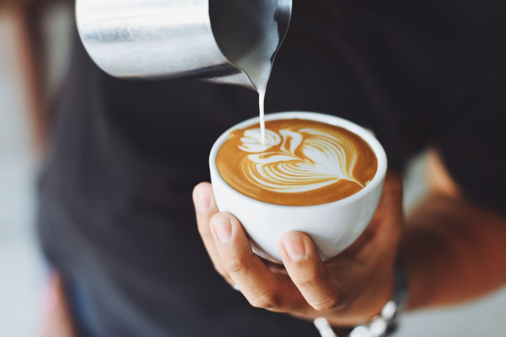
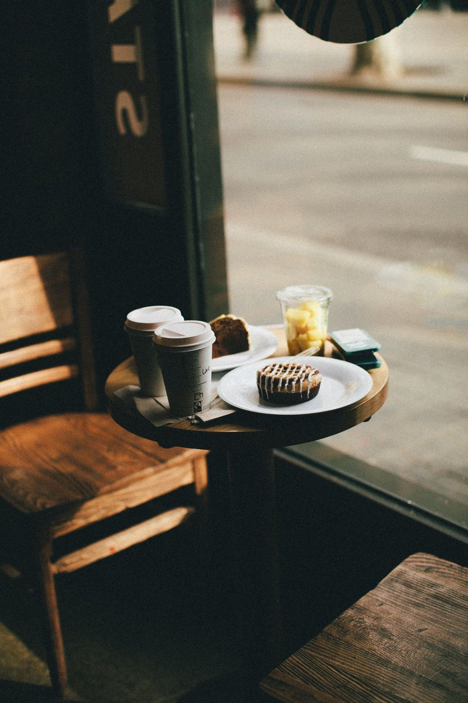
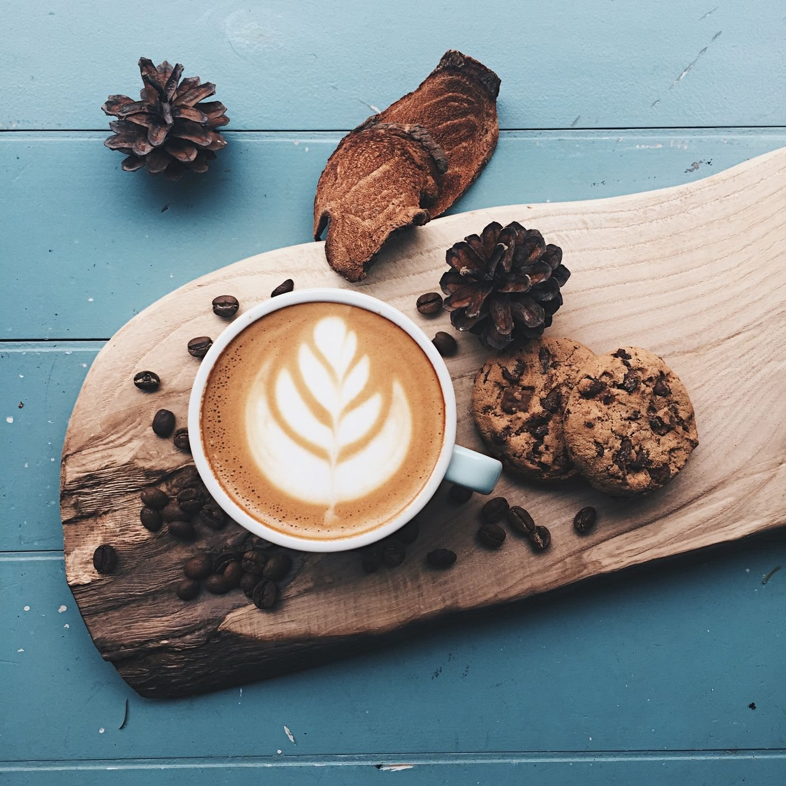
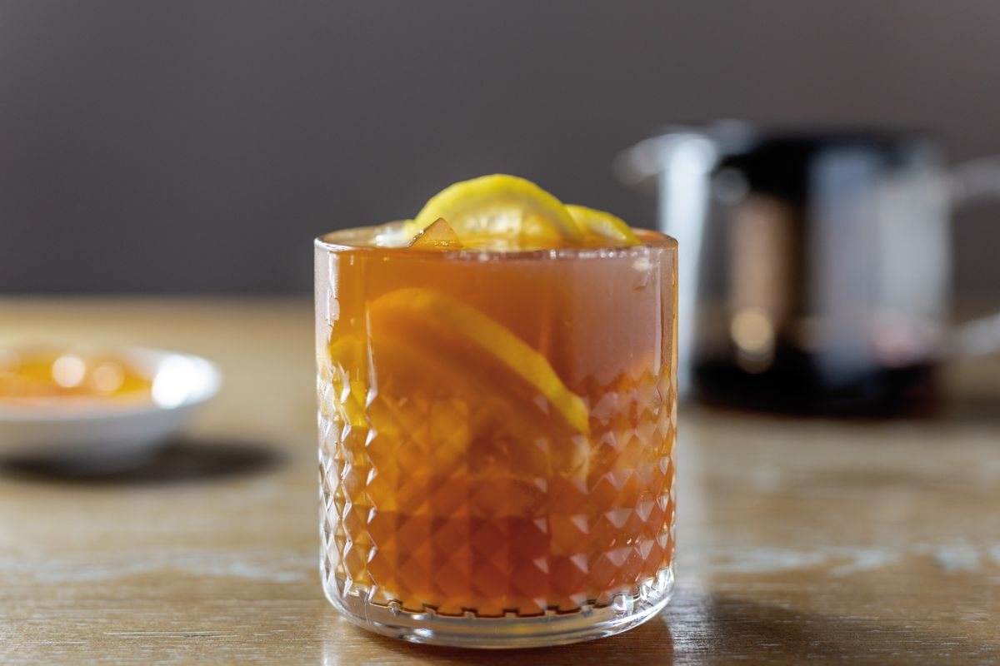
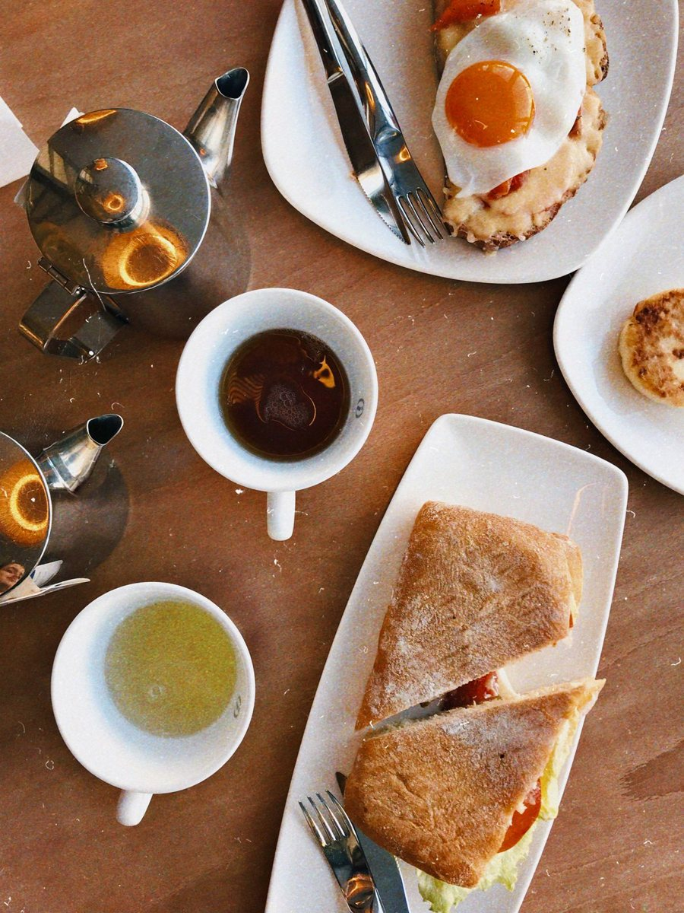
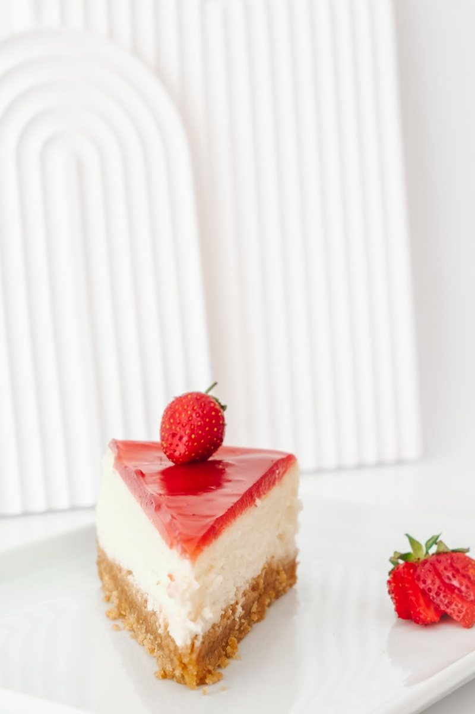

coffee
Lola's Barako
Bold Benguet barako brewed slow through a pour-over. Deep, earthy, with a rich caramel finish.
The menu
Bold coffee, comforting plates, and something sweet to finish. All names and prices are sample menu content.

coffee
Bold Benguet barako brewed slow through a pour-over. Deep, earthy, with a rich caramel finish.

coffee
White coffee with sweetened condensed milk, served hot or over ice. Creamy and comforting.

coffee
A shot of espresso with house-made ube syrup and velvety steamed milk. Beautiful, purple, delicious.

coffee
12-hour slow-steeped cold brew infused overnight with fresh pandan leaves. Smooth and aromatic.

coffee
Double ristretto shots with velvety microfoam milk. Intense, silky, precision-crafted.
coffee
Ceremonial-grade matcha base with a bold espresso shot pulled through. For the adventurous palate.

non coffee
Fresh ginger tea steeped and frothed with steamed milk and a drizzle of wildflower honey. Soothing.
non coffee
Fresh young coconut meat and pandan blended together with coconut milk and ice. Tropical and refreshing.
non coffee
House-brewed black tea chilled and brightened with a squeeze of fresh local calamansi. Tangy and light.
non coffee
Rich hot chocolate made from native tablea cacao discs, thick and bittersweet. A Batangas classic.
non coffee
Fresh Benguet strawberries muddled over chewy sago pearls in cold fresh milk. Sweet and fun.

food
Our golden ensaymada, sliced thick and toasted with salted butter and a dusting of muscovado sugar.
food
Garlic-fried sinangag rice, sunny-side-up egg, and your choice of sweet tocino or tender beef tapa.
food
Warm pandesal filled with Batangas ham, a fried egg, and fresh kesong puti. A classic done right.
food
Thin rice noodles drenched in creamy shrimp broth sauce, topped with tinapa, chicharon, and calamansi.

desserts
New York-style cheesecake topped with a thick slab of silky caramel leche flan. Our signature dessert.
desserts
Layered ube ice cream, sweet sago, nata de coco, macapuno, and crunchy pinipig. Fiesta in a glass.
desserts
Crispy waffle infused with bibingka batter, crowned with soft kesong puti and a drizzle of muscovado.
desserts
Purple sticky rice cake inspired by the beloved Christmas street snack, served with grated coconut.
specials
Any hot coffee paired with ensaymada toast. Sample Monday offer.
specials
A full silog plate paired with an iced drink. Sample weekend offer.
specials
Espresso-based drinks, 2 PM–5 PM. Illustrative daily offer.
There are no sample specials in this category yet. Explore the rest of the menu.
Photographs illustrate café refreshments and atmosphere; they do not depict each exact menu item. Ask the café about ingredients and dietary needs before ordering at a real venue.